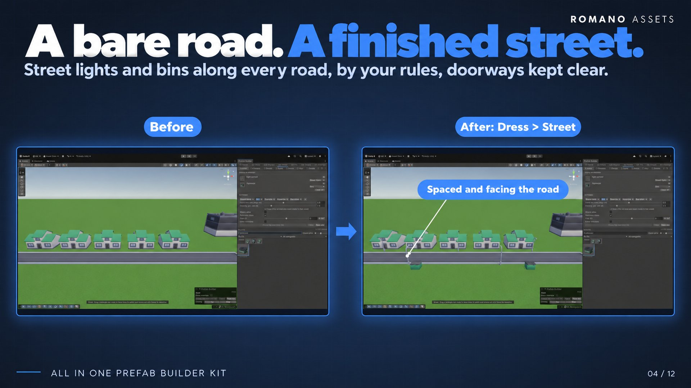

Dress Tab
Dressing what's built: furniture along the streets, closures across roads, signs with your text (on a board or flat on the ground), decals, cables, fences and variety (Vary). Facades come in a later version.

The Dress tools are laid out like the Place tools: the picked pieces at the top (a list with a picture of each, it scrolls on its own past three), the settings under them (they scroll on their own past eight lines), and the palette underneath. The mouse wheel scrolls whichever of the three it's over.
Street #
Your own kinds of street furniture along the sides of roads.
Kinds #
The panel lists your kinds of furniture, the rule set ships Street lights, Bins, Benches, Hydrants and Bus stops, with no pieces in them: kits name things too loosely to guess (a pile of trash is not a bin), so you pick them.
- At the top, every kind's pieces in one list: each with its picture and, under its name, a dropdown for its kind, change it to move the piece to another kind (with dressed roads selected, they're dressed again with it straight away). x takes a piece out.
- Under the list, one tab per kind: laid out as Closures' parts. The open tab shows that kind's settings, and palette clicks add pieces to it: one, two, as many variants as you want; each placement picks one of them. Click a piece again to take it out; right-click a piece in the palette > Add to kind works too. Each tab has a small x to remove the kind, and + at the end of the tabs adds one. The tabs scroll sideways when they don't fit (the mouse wheel over them). Double-click a tab to rename it (Enter keeps the name, Esc drops it); right-click it to rename, move it earlier or later (earlier kinds get first pick of the spots) or remove it.
- The kind's settings (no on/off switch: every kind with pieces is placed): From the road edge (m, to the near side of what stands on the ground: a bin's side, a light's pole, so its arm still reaches over the road; positive, beside the road, on the pavement next to it; negative, on a sidewalk that's part of the road piece), Density (how many per 100 m of road side; 0 = none; the small print says how many along the selected roads), Mirror sides (each piece has its twin straight across the road: the same piece at the same spot along it), Turn (°) (its pieces turned from facing the road, ↻ 90° a quarter at a time: for pieces whose front is set wrong or that should stand at an angle) and Alternate sides (one side half a spacing on; not with Mirror sides).
The kinds are saved in the rule set, so they travel with presets.
Dressing #
- Select road tiles, click them in the Scene view (Shift or Ctrl adds more), and click Dress the selection (it counts them). Or drag a rectangle over roads in the Scene view.
- Ghosts show the furniture first. Let go (or click the button) to place it. One Undo step.
- Furniture goes on both sides of each road (alternate sides where the kind says so), fronts facing the road, never across a road's end, never within 2 m of a corner, never in front of a building's door.
- Each piece is a child of the road tile it stands by: move the tile and its furniture goes with it; delete the tile and it goes too.
- Pieces that would overlap something standing there show red and are left out unless Allow overlaps (the same switch as the Place tab's) is on. Ground, roads and sidewalks never count as in the way.
- Dressing roads again replaces what the dresser put there, it never doubles it, even when you dress only part of a dressed road: what's on the tiles selected is replaced, and no piece goes where one already stands. Clear takes it away. New mix picks among each kind's pieces again.
- Only the road's real sides are dressed: select one lane of a wider road and nothing goes between the lanes. A single road tile is dressed along its pavements (or on every side, if it's flat).
- Settings apply to what's placed: with dressed roads selected, changing a kind (its pieces, sliders, switch, order) dresses them again straight away (one Undo step each).
Closures #
A road closed off, in parts: barriers, cones, a sign, a wall and the road beyond.
- At the top, every part's pieces in one list: each with its picture and, under its name, a dropdown for the part it's for (Barriers, Cones, Sign, Wall, Road), change it to move the piece to another part. x takes it out.
- Under the list, one tab per part: its settings, and the part palette clicks add pieces to (as many as you want, used in turn; click a piece again to take it out, or right-click a piece > Add to):
| Tab | Its pieces | Its sliders |
|---|---|---|
| Barriers | a row across the road, centred on it | Forward / back, Gap (between the pieces), Sideways, Past the road |
| Cones | a row across the road, centred on it | Forward / back, Gap, Sideways, Past the road |
| Sign | the sign board the text goes on (none: a plain post-and-board sign), the sign text, and how it looks, font, colour, size, text across / up, both sides, backing (as in Signs) | Forward / back, Sideways |
| Wall | wall pieces in a row across the road behind the line (none: only the invisible collider), and Invisible wall (collider) | Behind, Gap, Sideways, Past the road |
| Road | road pieces carrying the road on past the closure, flush with the road's end, the tile's whole width and level with it (none: copies of the road tile there); R (or ↻) turns them a quarter, remembered for each road piece, so one pack's turn never turns another's roads | How far |
- Each part has a switch, and ↻ turns its pieces a quarter at a time, for pieces whose front side is set wrong.
- Past the road (m) makes a row of barriers or cones reach past each side of the road (negative: stop short of the sides); the row stays centred.
- Road is off by default. It starts exactly where the road already there ends: no gap, even with the closure a little past the end, so it never covers road; Over road already there lays it from the closure line on, over road too. Its pieces never count as road for later closures or dressing.
- Sign text: type it, or pick one of the rule set's closure texts (▾: Road closed, Bridge closed, Private road).
- Turn round (the last setting): the traffic comes from the other side, the barriers, cones and sign face the other way.
Then drag a line where the closure goes, or point near a road edge (it turns red) and click, the nearest edge, a
road's end or its side: the closure goes wherever you point or draw it, looking through whatever stands in the way (a
building, a billboard, another closure) to the road behind. On a road, it goes across one road tile, on
a wide road or at a junction, the one pointed at (or the one the line crosses nearest its middle), straight along the
tile's side you drew it along, centred on its lanes and standing on them: from kerb to kerb (the tile's lowest
surface, between raised pavements, the whole tile if it's flat), at their height. Past the road reaches onto the
pavements. A line over no road is built exactly as drawn. The arrow shows the way the traffic comes; it starts pointing
away from the road (where the road beyond goes), and Turn round (in the settings) swaps it. One Undo step. The
closure is one object in a Closures folder inside the Roads folder of its road (World/Ground/Asphalt/Roads/Closures):
or in the Grouping picked under the panel, the one every tool shares: with its parts inside it; building on the same line again replaces it.
Changing a closure after it's built: a closure is selected as soon as it's built (as a sign is), so the panel changes it straight away; later, click it in the Scene view with Closures on (or select it or any of its parts). Every change: pieces, sliders, parts on or off, the sign's text and look, Turn round, R: builds it again in place. A click elsewhere stops changing it; clicking another road end builds a new closure there. What you change on a closure is also what the next one gets (all but Turn round). Tidy scene folders leaves its parts where they are. Esc drops a line being drawn.
Signs #
Signs with your text, placed where you click.
- Choose the object the text goes on in the palette: a sign board, preferably. It shows at the top, as the other tools' picked pieces do (x, or clicking it again, goes back). With nothing chosen, a plain post-and-board sign is made.
- Set the Text (Enter for a new line), the Font (yours; left empty, a font that came with the sign's pack if it has one, else Unity's built-in font, no font is shipped), the Colour, the Size (how tall the letters are: Fit to the board fills the board, less a margin; moving Size sets it yourself instead) and where the text sits on the board: Text across and Text up / down (m, from the middle of the board's face), and Text depth, how far it stands out from the face, for boards that aren't flat (the backing moves with it). Both sides puts it on the back too; Backing board puts a plain board behind it, in a colour you choose, following the text wherever it's slid, at least the size of the board and bigger where the text is; Backing width and Backing height set its size yourself (0: it fits). With Both sides, the back's text slides with the front's, right behind it. Flip turns the text round onto the board's other face, reading from that side: the sign itself stays as it is (for a board whose text came out on the side away from you). Turn (°) turns the text (and its backing) on the face.
- Click in the Scene view to place the sign, facing the camera; R turns it (hold R and move the mouse sideways to turn it freely). Where it stands follows the grid (its row is in the Scene overlay) and Snap to pieces (in the panel, as Stamp's): hold Ctrl (Cmd) to place it freely. The ghost under the mouse is the sign as it will be: board, backing and the text itself, the same letters and size. One Undo step.
Floor signs: tick On the surface and a click lays the text flat on whatever is under the mouse, the ground (STOP, BUS, a parking bay's number), a wall (a house name), a roof, with no board: just the letters, a hair above the surface, reading the right way up from where you look (on a wall, upright). R turns it a Turn step (the Grid row's), Turn (°) any way; Flip turns it round to read from the other way. On the ground it follows the grid across, never up or down; on a placed piece it becomes part of it (a wall's lettering goes where the building goes). Size, font, colour and the rest are as for any sign.
Changing a sign after it's placed: select it (placing a sign selects it), the small print at the top says Changing and every field changes it straight away: text, font, colour, size, position, both sides, flip, backing.
- The text goes on the board's face: of the piece's front and the other three level directions, the one with the most big flat faces, so a board on a pole gets its text on the board, whichever way the board was modelled. Anything with no flat face to carry the text starts with a backing board: switch Backing board off and it has none (a plain sign's backing is its board, so it keeps it). If the text faces away, Flip it.
- The text lives on a Sign Text component on the sign (editing it in the Inspector lays it again), drawn with the kit's own text shader: unlike Unity's built-in text it's hidden behind whatever stands in front of it, in every render pipeline.
Decals #
An image laid flat on any surface: graffiti, road markings and arrows, stains, posters, logos.
- Choose the Image: any texture in your project (a PNG with see-through parts works best). The images you used last
show under it as buttons, a click choosing one again, and after them the kit's sample decals (road arrows, a manhole
cover, an oil stain;
Samples/Decals, CC0), to try it straight away. - Set its Width (m; its height follows the image's shape), Turn (°), Tint (white: as it is; a less opaque tint makes it fainter) and Brightness, decals aren't lit by the scene's lights, so lower it for one in the shade.
- Click the ground, a wall or a roof: the decal lies flat on it, reading the right way up from where you look (on a wall, upright). On the ground it follows the grid, as every placing tool (Ctrl: free), and keeps one straight turn wherever the mouse goes. R turns the next one a Turn step (Shift+R the other way; hold R and move the mouse to turn it freely). The image under the mouse shows where it will go.
On a placed piece it becomes part of it (a poster on a wall goes where the building goes); otherwise it's filed in a Decals folder. Select decals and the settings change them straight away. One Undo per decal.
Decals are drawn with the kit's own Decal shader (Built-in and URP; it has an HDRP pass too, untested); each image and tint
shares one material, saved in your data folder (Decal Materials/), never one per decal. The image, width, turn, tint and
brightness live on a Decal component (editing it in the Inspector lays it again).
Cables #
Cables hung between two points, sagging in the middle: power lines, phone lines, washing lines, bunting.
- Choose what it is: Wire (just the wire) or Bunting (little flags along it).
- Click where it starts (a pole, a wall, a roof, the ground) then where it ends: the cable hangs between. The clicks carry on from there, so clicking pole after pole runs a line down the street; Esc stops. A line shows where the next one will hang.
- With Hang from the top of poles (on by default) a click on a pole: a piece much taller than it's wide, a street light or a telegraph pole: hangs the cable from the pole's top, above its foot. Off, it hangs from where you click.
Sag is how far its middle hangs, as a share of its length (0: tight), so long cables hang lower than short ones. Thickness and Wire colour set the wire. Bunting has a Spacing and a Size, and its flags' Colours (used in turn along it; + and − add and remove one).
Select cables and the settings change them straight away; their ends show handles to drag. Shift- or Ctrl-click selects.
Each cable is filed in a Cables folder, one Undo step each. A cable makes its own mesh from a few numbers on its Cable
component (change them in the Inspector too), so the scene only keeps those numbers. Its materials are shared ones in your
data folder (Cable Materials/), made from your render pipeline's own material, so cables are lit as everything else is.
Fence #
Fence is in the Dress tab: fencing yards, lots and parks is part of dressing a street (the number before its name in the tool bar picks it). It picks its pieces from the palette the way the Place tools do (see Picking pieces).
- Pick fence panels in the palette (several are used in turn). In Multiple, each picked piece has a dropdown: Panel, Post, Gate or Corner; a gate (named "gate") or a post (named "post", or small and square) comes in as one. Right-click a piece for Add as ….
- Drag a rectangle in the Scene view (its corners snap to the pieces nearby and the grid, as switched; hold Ctrl for free corners), or, with Draw chosen (over the settings), drag the line the fence runs along: any shape, a corner wherever it turns (a wobble of the hand is no corner), each corner snapped as a rectangle's are; end where you started and it goes all the way round, else a post (or corner piece) stands on both ends, or select buildings or an area, click them in the Scene view (Shift or Ctrl adds more), and click Fence the selection: the fence follows the outline of what's selected (an L-shaped area gets an L-shaped fence, things apart a fence each) Margin metres out from it.
- Whole panels only (on by default): the fence knows how long its panels are and only lets you make it in whole panels, the rectangle grows a panel at a time from where you pressed (the Scene view shows its size in panels), a fenced selection is grown to whole panels, and the opening takes one panel's place. Every panel is complete. Whole panels only off: any size, the panels closing up a little to fit (never stretched).
- Fronts face out (Panels face in, or R, turns them).
- Each side runs corner to corner with its panels centred on the fence line, so at every corner the two sides' end panels meet on the same point. Pick a post (or a corner piece) for a crisp corner: it stands right on it.
- The post (or the corner piece) goes on every corner, and between panels, with Posts between panels.
- The Opening goes in the middle of one side (north, east, south, west, or by default the side facing a road): with the gate piece, or a gap with a post either side (Whole panels only: one panel wide; otherwise the width you set). With no road next to it, there's no opening, and you're told.
Fences that meet: the Fence tool sees any fence already there, built with Fence, laid with Row, placed by hand, part of the scene (anything in the Fence category). Drag near its corner or a post and the new fence's corner snaps onto it (the marker turns blue), so it starts where the other ends. A side that nearly meets it (within half a panel) lands on its line, and no piece is placed where a fence piece already stands: two yards side by side are fenced once between them, while dragging, that side of the ghost stays empty. Hold Ctrl for none of this. The fences stay separate, each with its own opening and Margin.
Each fence is one object (Fence (n), in the panels' folder or the group) holding its pieces, one Undo step. Margin after placing: with the fenced objects (or the fence) still selected, changing Margin builds that fence again at the new distance.
Vary #
Make what's placed look less copied: a street of the same awning, the same house, the same crate. Vary only uses the variety your kits already have; a pack's own files are never changed.
- Piece: swaps it for a lookalike from its kit: the same category and about the same footprint and height, with a name of the same family (awning-red, awning-blue, awning-2; building-a, building-b). It stands where the old one stood.
- Material: swaps its materials for the pack's own alternatives of the same name family (Brick_01, Brick_02, Brick_Red), where the pack has them.
- Colour: tints each part with a palette colour of its own role: the walls one of the active palette's wall colours, the trim a trim colour, and so on. Any colour picks from them all; untick it and tick the colours to use (each shown with a swatch; only colours the selected pieces have parts for are offered): a part with none of its role ticked keeps its own. Which part is which comes from its material's name, else its size: as Fix > Randomize (see the Fix Tab page). Shared material variants (Settings > Palettes): never one material per object.
- Turn: turns it round (180°) half the time.
Click a placed piece to give it a new look; select some (Shift- or Ctrl-click, or Move > Select) and press Space: or Vary the selection: to vary them all. The piece under the mouse is outlined, with what it can become ("2 lookalikes, 1 other material"). Back to original takes off the colours and other materials Vary gave the selection (swapped pieces stay swapped: Undo brings them back). One Undo step each time.